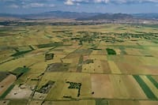

Inclusão produtiva
O Brasil possui milhões de propriedades rurais com diversidade social e econômica, porém, a produção agropecuária está concentrada em um número reduzido de produtores. É necessário adotar políticas públicas que gerem renda, promovam inclusão no mercado e oportunidades para os pequenos produtores. Ações como fortalecimento do cooperativismo, acesso a crédito e seguro rural, valor agregado e diversificação da produção são essenciais para enfrentar esses desafios e combater a pobreza no campo.
Iniciativas relacionadas
